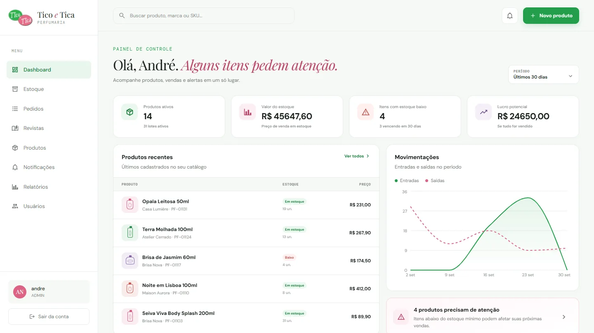
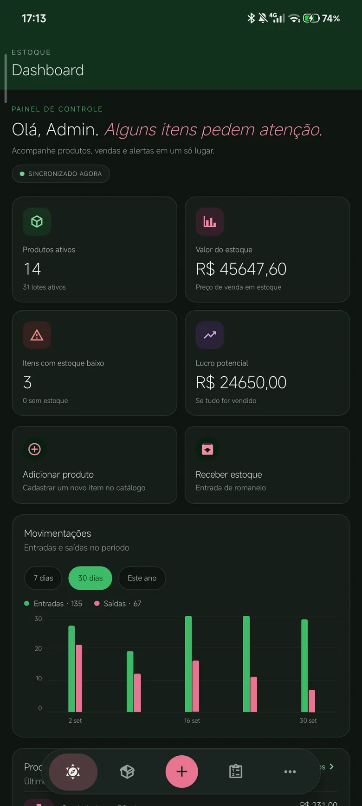

Web + Mobile · Perfumaria
Estoque por lote, do celular ao painel
- 2plataformas, web e mobile
- FIFO/FEFOregra de saída por lote
- Diárioalertas de estoque e validade
- Contexto
- Uma perfumaria precisa saber o que entrou, o que saiu e o que está perto de vencer.
- O que entrega
- O app mobile registra entradas e saídas em lote; o painel web cuida de cadastro, relatórios e finanças. O servidor em Java calcula a margem de lucro e envia os alertas.